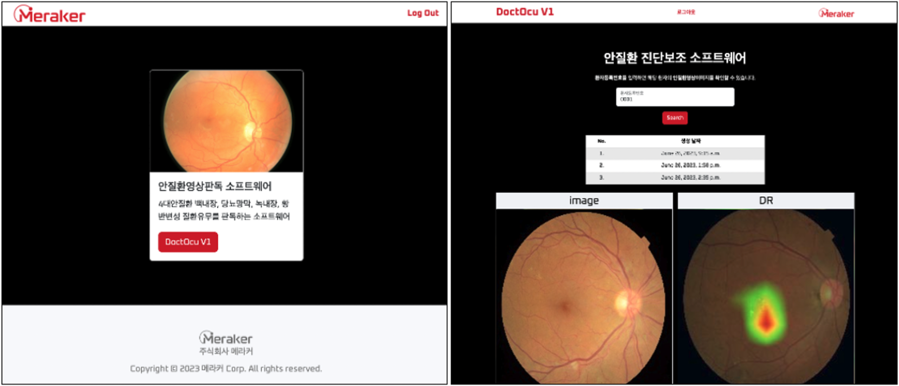

Deeplearning Engineer
딥러닝 연구원 한다운입니다.
데이터를 통해 세상을 바라보고, 비지니스 가치로 잇는 것에 관심있습니다.
능동적인 태도로 새로운 기술을 배우고 적용하는 것에 적극적인 엔지니어입니다.
| AI(ML/DL) | PyTorch, OpenCV, TensorFlow, LangChain, Numpy, Pandas |
|---|---|
| Programming & Tools | Python, Linux, Kubernetes, Docker, Google Cloud Platform, PyQT, Git |
| Web Programming | FastAPI, Flask, Streamlit, Django |
| Database skills | SQL(MysSQL, SQLite, PostgresSQL), NoSQL |
다파장 카메라 실험 성능 확인을 위한 Window 및 Mac 버전용 소프트웨어 개발
○ PyQT를 활용하여 영상데이터의 픽셀별 RGB 추출 소프트웨어 개발
데스크탑 애플리케이션 개발에 필요한 PyQT를 사용할 수 있습니다.
○ 영상 데이터를 학습 데이터로 만드는 유틸리티 구현 (Multithreading을 통한 시간 83% 단축)
시간 리소스 절약을 위해 Multithreading 기술을 사용하였습니다.
○ [성과] 광학 엔지니어 요구사항 기반의 실험용 소프트웨어 개발 완료
입력 데이터의 특징 추출 시, 변형가능한 컨볼루션을 적용하기 위한 라이브러리 개발 프로젝트
○ 마이크로소프트 社의 DCNv2 모델 코드구현
논문 내용을 기반으로 코드구현이 가능합니다.
○ CNN 모델의 Convolution layer를 Deformable convolution layer로 변경
기존 모델을 커스터마이징하여 적용하였습니다.
○ [성과] Deformable convolution 적용한 뒤, 백내장 진단정확도 91.45%에서 93.2%으로 상승
안질환 진단보조 웹앱 서비스 배포 프로젝트
○ 도커를 활용한 APP 컨테이너화 및 쿠버네티스 기반 딥러닝 모델 배포
진단보조 웹APP과 모델은 각각 컨테이너로 배포되어 모듈화 되어있습니다. 사용자 요청에 따라 모델컨테이너 팟이 증가되어 수요증가에 대응할 수 있습니다.
○ SaaS 시스템 아키텍쳐 구축 경험 (MySQL DB, Django 웹앱, 딥러닝 모델 컨테이너)
Django 프레임워크로 개발한 웹사이트에 안질환 판독모델과 Restful API 통신으로 연결하였습니다.
○ [성과] 구글 클라우드 플랫폼 기반의 안질환 진단보조 웹앱 서비스 구축 및 배포
안과이미지를 통해 선별진단하는 AI 개발 프로젝트
○ 데이터 전처리 및 모델개발 파이프라인 구축
안질환 진단모델 개발에 필요한 데이터 프로세싱, 모델 선택, 학습 및 질환의심부위 표시결과 출력과정을 한번에 진행할 수 있는 프레임워크를 구축하였습니다.
○ GradCAM을 활용한 질환의심부위 표기
의료진의 요구사항을 바탕으로 GradCAM heatmap 표현범위를 조정하여 질환 의심 부위를 보다 명확하게 시각화했습니다.
○ 진단모델이 안구이미지의 망막 부위를 보지 않고 판단하는 문제 해결
이미지에서 망막 외 부분에 가우시안 분포를 이루는 Random Noise를 추가하여 망막정보만 학습하도록 유도하였습니다.
○ Multi GPU (A100 또는 RTX4090 4대) 사용을 위한 DP/DDP 기술 적용
Multi GPU 환경을 구축하여 Distributed Data Parallelism(DDP) 기술을 통해 모델학습 시간이 DP기술 대비 70% 감소하였습니다.
○ 텐서보드의 모델 학습 모니터링 시스템 도입
텐서보드를 통해 실험 도중 모니터링을 할 수 있기 때문에 시간 및 GPU 리소스 비용 절감을 하였습니다.
○ [성과] 4대 안질환 판독모델 개발 (각 질환별 정확도 91.45%, 98.4%, 96%, 93.45%)
LangChain과 OpenAI 모델을 활용한 AI챗봇 개발 프로젝트
○ 문서 파일(.PDF, .docx 등) 기반 사용자 질문에 답변하는 Document GPT 구현
유저가 입력한 문서파일을 기반으로 질문에 적합한 답변을 생성하는 챗봇 기능입니다.
○ 대화 내용을 캐시에 저장하여 GPT모델의 문서로드 시간단축 및 API 호출비용 절감
API 호출 시 부과되는 모델 사용료를 줄이고자, 기존 대화내용을 캐시화하였습니다. 따라서, 기존에 같은 질문을 한 경우, 저장된 캐시에서 답변을 찾아 API 중복호출을 방지하였습니다.
○ Streamlit로 구현된 사용자 인터페이스를 갖춘 대화형 AI챗봇 개발
Chatbot 유저 인터페이스를 효율적으로 구현하기 위해 라이브러리 Streamlit을 활용하였습니다.
○ Whisper를 활용하여 회의 오디오 내용을 기반으로 회의록 작성 및 요약 기능 구현
OpenAI의 음성인식모델 Whisper를 활용하였습니다. 사용자가 회의영상 데이터를 업로드하면 오디오를 추출한 뒤, 회의록을 작성한 뒤 주요내용을 요약하는 기능을 개발하였습니다.
○ [성과] LLM 모델들을 활용한 사용자와 상호작용하는 대화형 챗봇 개발